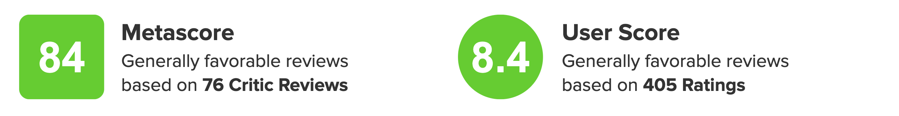
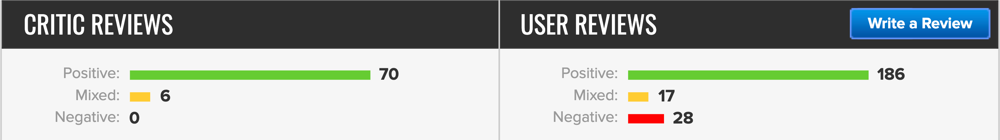

クリアした感想
BIO HAZARD VII.l.AGE１週目をクリアしたのでその感想を述べて行きたいと思います。
なるべくネタバレせず書きますので最後まで読んで頂けると幸いです。
metacriticの評価
metacriticとは
映画、ゲーム、テレビ番組、ミュージック・アルバムの評価のレビュー収集サイト。さまざまなウェブサイトからレビューを取得し、その評価を数値化して作品・製品ごとに Metascore (メタスコア) と呼ばれる評価の加重平均値の百分率と、それに基づく5段階の評価の傾向、および緑、黄、赤の3段階の視覚的指標を表示する。
そんなmetacriticの評価は2021年5月10日、発売から3日現在のスコアが下記のようになります。
 Metascoreは84/100と高く視覚評価も緑と最高ランクです。
User Scoreは8.4/10とこちらも高いです。
レビューの内訳も高くCRITIC REVIEWSにいたってはNegativeが０となっております。
この事から世界的にも良作ゲームではないかと思います。
評価の基準を定義
当ブログではゲームを下記点から評価し、各評価を100点満点で評価します
映像性
グラヒックスの評価になります。
ゲームによって評価方法は事なりますが、今回は3D技術を用いたリアリティ面やエフェクト、ゴア表現を評価対象とします
ゲーム性
アクション性・思考性・育成といったゲームのシステム面ついて評価します。
ユーザビリティ
ゲームの快適性を評価する項目になります。
操作性や致命的なバグ、ローディング時間によって待機させられた時間などが減点対象になります。
音楽性
主にBGMや効果音の評価になります。
ボス戦の音楽や足音や銃声など、ゲームへの没入感を与えられていたかで評価します
物語性
ストーリーの他に世界観や演出もこちらで評価します
登場人物
キャラクターの外見のデザインや内面性で評価します
映像性 Score 90
最新技術の賜物だと感じました。
今作は季節が冬ですが、積もる雪の表現がリアルそのものでした。
また、グラフィックを語る上で欠かせないのが水の表現だと思いますが、こちらも文句無しに綺麗でした。
ゴア表現に関してですが、マップ内に設置されているオブジェクトは背筋がゾッとするものがありましたが、イーサンのダメージによる表現はやや緩和している気がしますが、こちらは仕方ないことだと思います
ゲーム性 Score 80
アクション性
FPS視点のためスタイリッシュさや爽快感を求めた操作はできませんが、従来の主人公と比べ、今作の主人公が一般人である事を考えると格好いい格闘技を繰り出す必要がないためFPS視点をチョイスしたと考えると素晴らしいと感じました。
思考性
バイオハザードの醍醐味とも言える謎解きの出来は文句ありませんでした。
マップの地形を最大限に活かしたステージギミックにボス戦
各マップでプレイヤーを恐怖に陥れ、思考を鈍らせにくるストーカー
最後まで楽しめるものがあると感じました。
育成
やや不満に感じる要素でした。
ゲームの特性上仕方ない事ですが、強くなったという実感がゲーム全体と通して薄いと感じました。
武器の強化、料理による永続バフなどの育成要素がありますが、どれも成長したといった実感は薄く、ゲームを進める上でのマスト条件のように感じました。
ユーザビリティ Score 80
操作性の快適性はややもっさりしています。
FPSなため行動に制限がかかるのも仕方がありませんが、今作は戦闘を求められる場面が多いので操作性にストレスに感じる人も多いのではと思います。
ローディングは短く、今思い返してもいつローディングがあったかも定かではありません。
バグに関しても遭遇する事はありませんでしたが、ゲーム全体を通して一箇所やたら処理が重くなった箇所があったのでそこだけはストレスでした。
音楽性 Score 90
緊迫感のあるBGMはボス戦や襲撃戦をしていると実感させてくれました。
アイテムを拾う効果音などもアイテムのテキストを読みにいかなくても”これは貴重なアイテムだ”と直感でわかりました。
物語性 Score 95
ストーリーは終始最高でした。
7・８とイーサンをプレイしてイーサンという主人公の素晴らしさにエンディングでは涙無くして終われない作品だと思います。
それ故にもう少し語って欲しいストーリーも多く、そこに考察の余地を残すのではなく解答が欲しい箇所もありました。
世界観に関してはブラッドボーンを彷彿とさせる場所も多く、そういった雰囲気が好きな人にはバイオファンのみならずプレイして欲しい 作品です。
タイトル回収の仕方の上手さと落ちの付け方も素晴らしかったと思います。
登場人物 Score 75
全体的にみて不満点が個人的に多かったです。
主人公のイーサンも全体で見れば良いキャラクターですが、所々でサイコパスな一面がり、少し違和感を覚えました。
その他敵対キャラクターもい印象が薄いキャラと期待を悪い意味で裏切るキャラもいたので全体を通してマイナスポイントが多かったです。
総評 Score 85
計６項目から評価した平均が85とmetacriticとほぼ同じスコアになりました。
没入性は高く全体のストーリーや音楽は本当に素晴らしかったです。
その反面、敵対キャラの印象が他のバイオシリーズ比べ劣っているのが残念でした。
また、評価の内訳には入れマンでしたが、ゲームの難易度は高めに設定されており通常難易度で遊んだとしても手持ちのリソースをしっかり管理していかないと、ゲームを最初から遊ぶか、最低難易度に落とすかの二択を迫られると思います。
そういったシビアな難易度だからこそステージギミックを利用した思考性のある攻略を求められ、解答を見つけた時の喜びが大きいゲームだと感じました。
広告
このブログを読んで購入意欲が沸いた方がいたら下記リンクから購入してい頂けると幸いです。

|
【封入特典付】【PS4】BIOHAZARD VILLAGE Z Version 通常版 カプコン [PLJM-16806 PS4 バイオハザード ヴィレッジ Z ツウジョウ]
価格:7,470円 |